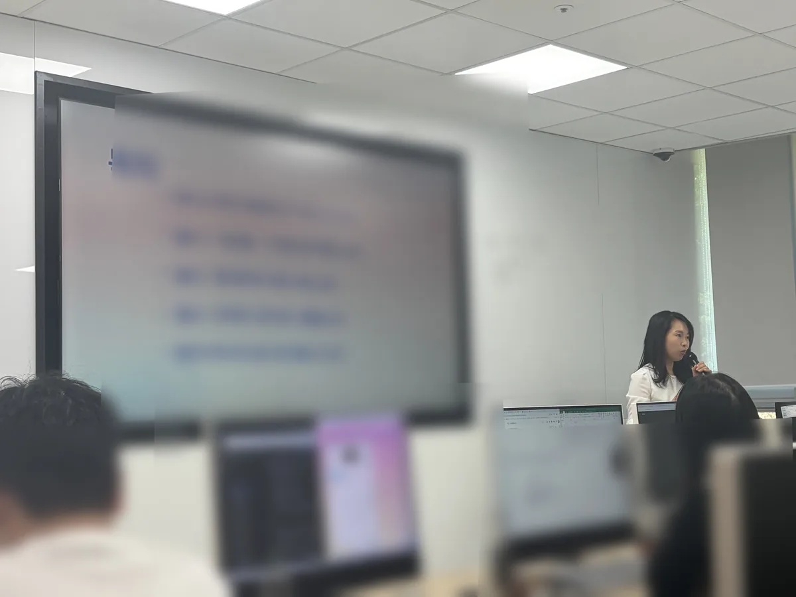
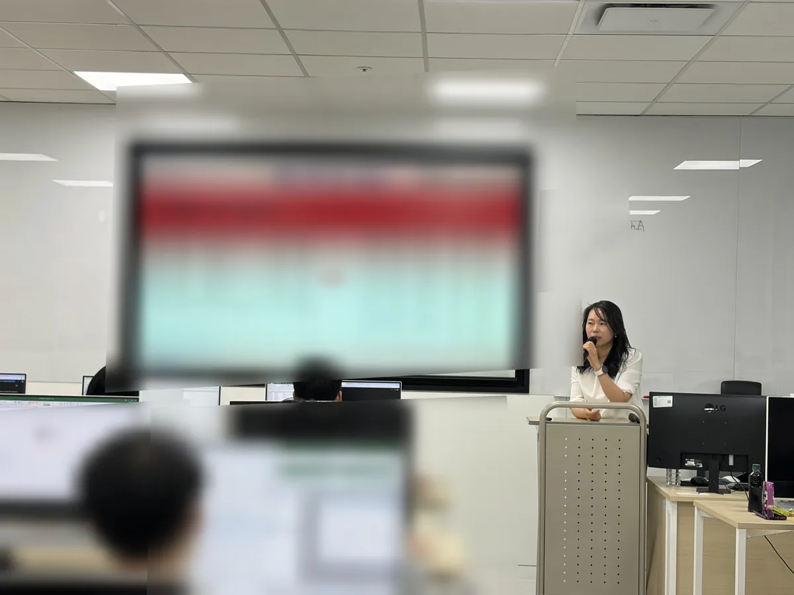

기업 · 공공기관 · 학교 담당자를 위한 AI 교육
업무에 바로 쓰는 AI·ChatGPT 실습형 강의
ChatGPT 활용, 데이터 정리, 업무자동화, 간단한 업무앱 만들기까지 실제 업무 예제로 따라오는 실습형 교육을 진행합니다.
Instructor Branding
어렵지 않게 배우고, 내 업무에 바로 써봅니다
개발자 출신 강사의 실무 감각으로 AI 활용, ChatGPT, 업무자동화, 데이터 정리·분석을 쉽게 풀어냅니다.
수업은 설명보다 실습을 중심에 둡니다. 뉴스 자동 수집, 자동 답장, 월별 내역 정리, 대시보드처럼 업무에 가까운 예제로 진행합니다.
Lecture Programs
주요 강의 분야
기관 목적과 수강자 수준에 맞춰 필요한 주제를 조합합니다.
Programs
대표 과정
강의 후 바로 써볼 수 있는 실습 결과물을 목표로 합니다.
Practice
업무 흐름에 맞춘 실습으로 연결합니다
자동 답장, 웹 데이터 수집, 만족도 대시보드, 엑셀 내역 정리처럼 실제 업무에 가까운 예제를 다룹니다.
Lecture Cases
실제 강의 사례
공공기관, 도서관, 기업 교육 사례를 정리했습니다.
Expected Outcomes
수강 후 바로 기대할 수 있는 변화
Trust Points
전문적이지만 딱딱하지 않게, 초보자도 놓치지 않게
초보자도 부담 없이 따라오도록 쉬운 언어와 실습 흐름으로 진행합니다.
Class Reviews
수강자가 남긴 강의 후기
실제 수강생 설문에서 발췌한 후기입니다.
FAQ
강의 문의 전 자주 묻는 질문
초보자도 수강할 수 있나요?
가능합니다. 용어 설명보다 실제 업무 예제를 따라 하며 익히는 방식으로 진행합니다.
기업이나 기관 업무에 맞춰 커리큘럼을 바꿀 수 있나요?
가능합니다. 교육 대상, 업무 환경, 희망 산출물에 맞춰 ChatGPT, 업무자동화, 데이터분석 내용을 조합합니다.
실습 환경은 어떻게 준비하나요?
노트북과 인터넷 사용 환경이 기본입니다. 기관 보안 정책에 따라 샘플 데이터와 대체 도구를 사용할 수 있습니다.
강의 제안서를 요청할 수 있나요?
가능합니다. 교육 목적, 대상, 시간, 예산 범위를 알려주시면 맞춤형 과정안을 정리해 드립니다.

